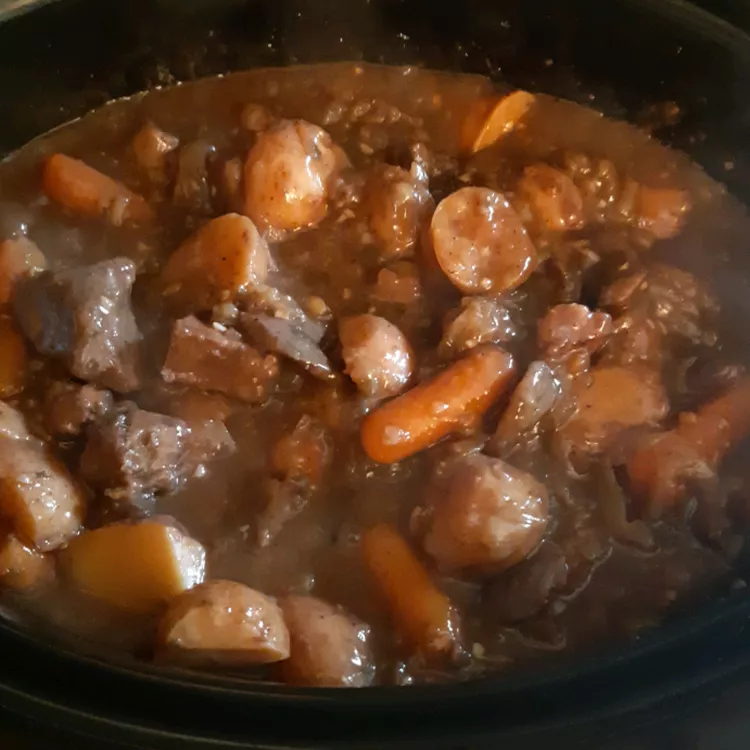

Meat Stew

Description
A hearty slow cooked meat stew with carrots and potatoes.
Ingredients
- 3 pounds cubed beef stew meat
- 1/4 cup all-purpose flour
- 1/2 teaspoon salt
- 3 tablespoons olive oil
- 3 tablespoons Worcestershire sauce
- 1 pound carrots, peeled and cut into 2-inch pieces
- 4 large potatoes, cubed
- 1 tablespoon dried parsley
- 1 1/2 teaspoons ground black pepper
- 2 cups boiling water
- 2(1 ounce) envelopes onion soup mix
- 3 tablespoons butter
- 3 large onions, quartered
- 2 tablespooons minced garlic
- 1/2 cup burgundy wine
- 2(6 ounce) packages freswh button mushrooms, halved
- 1/4 cup warm water
- 3 tablespoons cornstarch
Steps
- Toss the beef, flour, and salt in a sealable bag until the beef is coated.
- Heat oil in large skillet over medium-high heat. Combine the beef and Worcestershire sauce in skillet; cook until beef is browned on all sides; transfer to a slow cooker, but do not clean the skillet. Add the carrots, potatoes, parsley, and pepper to the slow cooker.
- Combine boiling water and soup mix in small bowl; add to slow cooker.
- Melt butter in skillet over medium-high heat. Cook onion and garlic in melted butter until soft; transfer onion and garlic to slow cooker and return skillet to heat. Combine wine and mushrooms in skillet; cook until mushrooms begin to absorb wine; pour into the slow cooker.
- Place cover on slow cooker and set to high; cook for one hour. Reduce heat to low and cook until meat is fork-tender, 6-8 hours. Whisk warm water and cornstarch;stir into the stew; cook uncovered until stew thickens, around 15 minutes.